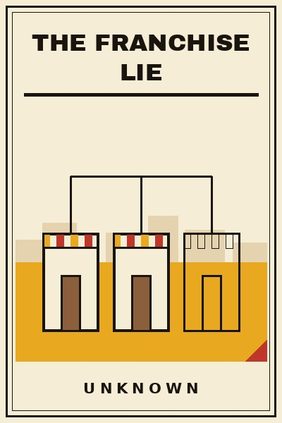

Library › Business & Startups
The Franchise Lie — Summary & Key Lessons

Ten lessons before you buy the brand, pay the fee and inherit the clock: what franchising actually sells, and to whom.
📖 OPEN THE FULL INTERACTIVE BREAKDOWN →🌐 Read it in Hindi, Hinglish, Gujarati, Tamil & 22 more languages — free, with audio.
💡 The Big Idea
Franchising is sold as buying a working machine. Sometimes it is. Often you are the machine, and the machine has a monthly service contract payable to the brand. This book is the unglamorous walkthrough every franchise buyer deserves before the showroom visit: what the fee actually buys, who makes money in which years, why the brochure shows the best outlet in the best mall, and the quiet clauses that turn your shop into somebody else's annuity. India has a thousand franchise stories a year: the outlet that paid for itself in fourteen months and the identical one that died in eleven, separated by location, working capital and the contract nobody read. The examples are real, from global fast-food empires to Indian food and education chains, the triumphs and the craters. Read this before you sign, and if you have signed, read it to know which clauses are now your roommates.
🧠 The 10 Key Lessons
Lesson 1: What the Fee Actually Buys
Chapter 1: Decomposing the Number
The franchise fee buys three things bundled: a brand, a system, and a territory claim. Price each separately. A strong brand saves you years of trust-building; a real system saves you a hundred mistakes; a territory claim protects your catchment. Weak franchises bundle nothing you could not buy cheaper elsewhere: a logo license, a binder of generic processes, and a promise of territory with an escape clause for them. Decompose before you dream.
📖 Example: Global giants like McDonald's and Subway sit at opposite ends: one sells a system worth the fee, the other historically sold cheap territory claims and volume, with very different unit outcomes. The bundle differs; decompose it every time. Read the full example →
⚡ Do this: Take the franchise fee and split it on paper: brand value, system value, territory value. Score each out of ten on evidence, not brochure. Weak totals mean walk away.
Lesson 2: The Store You Are Shown Is the Ad
Chapter 2: Visit Ten, Not One
Every franchise pitch includes a visit to the best outlet in the best location with the founding franchisee who is also the area partner. That store is the advertisement. The product is the median store in the median city in year three. Visit ten existing franchisees unannounced if possible, ask for revenue reality, royalty pain and renewal fears, and weight the median, not the model. Salespeople show survivors; courts fill with the others.
📖 Example: Investigations of big sandwich and coffee chains worldwide found franchisee associations forming around the same complaint: the company-owned showpiece thrived while median franchisees squeezed. The pattern repeats across food, education and salon brands in India too. Read the full example →
⚡ Do this: Demand the contact list of the last ten franchisees signed, not the stars. Call six. Ask one question: would you sign again today, knowing what you know. Count the hesitations.
Lesson 3: Who Makes Money in Which Years
Chapter 3: The Cash Calendar
Model the years on paper before year one: your outflows, the brand's inflows, and where the two timelines meet. Franchising is structured so the brand earns on your capex, your royalties and your mandated purchases from day one, while you earn when the store does, which may be year two. Neither side is evil; the structure just pays differently. Your job is to know your personal break-even month and to have the runway to survive it with family dignity intact.
📖 Example: Indian food-franchise postmortems repeatedly show the same skeleton: brand income from fees and supply margins from month one, franchisee income from month fourteen to twenty, and the ones who died had nine months of runway for an eighteen-month curve. Read the full example →
⚡ Do this: Build the cash calendar yourself: month-by-month for three years, both sides. Ask the brand to correct it in writing. The quality of their correction tells you theirs.
Lesson 4: Read the Renewal Like a Lease
Chapter 4: Year Six Is Where It Hides
The dangerous clauses sleep until renewal: mandatory refits at your cost, royalty step-ups, territory shrinkage, and the transfer fee that taxes your exit. Year one reads like partnership; year six reads like tenancy. Get every renewal term priced in rupees before signing, and negotiate the refit cap and the step-up formula now, while you still have leverage. Nobody renegotiates from inside a signed annuity.
📖 Example: Long-running disputes between big coffee and sandwich brands and their Indian franchisee associations keep circling the same four renewal clauses. The outlets that thrived were the ones that priced year six during year zero. Read the full example →
⚡ Do this: List the renewal clauses and price each: refit cost, royalty step-up, territory change, exit tax. If the brand will not put numbers on paper, consider that your answer.
Lesson 5: Supply Margins Are the Quiet Royalty
Chapter 5: The Invoice Behind the Invoice
Many franchises earn less from your royalty than from forcing your purchases: beans, flour, uniforms, software, marketing fund. The mandated supplier's price is the hidden fee, and it compounds monthly. Benchmark every mandated purchase against the open market quarterly. Contracts that ban outside supply at fair prices are not quality control; they are a meter running in the brand's corner.
📖 Example: Franchise litigation worldwide, from pizza chains to salon brands, keeps surfacing the same spread: mandated supply priced fifteen to forty percent over open market. On thin margins that spread is the difference between owning a job and feeding one. Read the full example →
⚡ Do this: Price your top ten mandated inputs against open market this week. If the brand's basket is over fifteen percent high, ask why in writing, and factor the spread into your go or no-go.
Lesson 6: Location Is Half the Religion
Chapter 6: The Mall, the Street and the Anchor
The same franchise sings in one location and drowns across the road: anchor footfall, rent-to-sales ratio, parking, visibility, and whether the mall's magic survives its third year. Indian retail is a graveyard of great brands in dying malls. Pay for a location study even if the brand offers its own, because the brand's study protects the brand's rollout targets, not your family's savings.
📖 Example: The great Indian mall boom and bust, from the gleaming launches of the mid-2000s to the dead wings by the 2010s, took scores of perfect franchise systems down with individual buildings. The brand survived; the franchisee had bought a floor. Read the full example →
⚡ Do this: Before signing any store, commission your own three-day footfall and rent-ratio study. Insist on rent under fifteen percent of projected sales, or walk. The building is the boss otherwise.
Lesson 7: Working Capital Beyond the Brochure
Chapter 7: The Runway Number
Brochures quote the setup cost and hide the survival cost: salaries and rent through the ramp-up months, the working capital that keeps the shutters open while reviews, delivery tie-ins and local habits find you. Ask for the ramp curve by percentile, not the promise, and bring eighteen months of personal runway. Franchisees rarely die of the fee. They die in month eleven, waiting for the promised footfall.
📖 Example: Indian education and food franchise insolvencies share a signature: setup on budget, ramp at a third of promise, and a working-capital gap that ate the family savings by the second year. The brand's prospectus had shown only the first column. Read the full example →
⚡ Do this: Build two runway numbers: setup capital and survival capital to month eighteen. Treat the second as the real ticket price. If you cannot fund both, the answer is not yet.
Lesson 8: The Marketing Fund Mirror
Chapter 8: Where the Two Percent Goes
Most contracts take a marketing levy, and most franchisees never see a mirror: where did it go, what did it buy, who decides. Demand annual fund accounts as a signing condition and as an operating right. A fund that buys national brand films may serve you; a fund that buys the brand's next investor deck serves you not. The levy is small; the principle is the whole relationship.
📖 Example: Franchisee associations across global chains list fund transparency among their oldest demands, right beside supply pricing. The brands that publish clean fund accounts have measurably calmer franchisee relations. The mirror is the message. Read the full example →
⚡ Do this: Make fund accounting a written condition: annual statement, per-store share, and audit rights. If the brand refuses a mirror on your own money, multiply that refusal across every future dispute.
Lesson 9: Franchise or First Kitchen
Chapter 9: The Do-It-Yourself Comparison
Before signing, price the alternative: your own brand in the same location with the same capital. You will spend more on mistakes and marketing, and you will own the learning, the customer data and the equity. For some temperaments the franchise system is mercy: it compresses a thousand mistakes into a binder. For builders it is a cage with a meter. The comparison is not about money alone. It is about what you are trying to own at the end of five years.
📖 Example: India's own QSR giants in food and sweets mostly began as single family kitchens that franchised outward after proving a system, rather than franchisees who grew. The equity path is slower and heavier, and it ends in ownership. Read the full example →
⚡ Do this: Write the two paths on one page: franchise vs first kitchen, capital, five-year outcomes, what you own in year five. Choose deliberately, not by brochure.
Lesson 10: Sign Slow, Then Run the System Honest
Chapter 10: The Operator's Oath
If after all of it you sign, sign slow and then operate honest: follow the system fully for the first year even when you disagree, keep your own books from day one, build your local regulars who come for you and not only the brand, and document everything you would want if this ever lands in a dispute room. Franchising done right is a fair trade: their brand, your hustle, both paid. Done blind, it is a subscription to somebody else's retirement.
📖 Example: The franchisees who prosper across chains, global and Indian, share the operator profile: they followed the manual long enough to know which pages were fluff, kept clean books, and built local loyalty the brand could not repossess. The system respected them back. Read the full example →
⚡ Do this: Before any signature: ninety-day cooling period, lawyer-read renewal clauses, six franchisee calls, two runway numbers, fund mirror. After it: year one by the book, books of your own, and a regulars' counter the brand cannot clause away.
✅ 5-Step Action Plan
- Decompose the fee: brand, system, territory, each scored on evidence.
- Call six of the last ten franchisees signed; count the hesitations.
- Build the three-year cash calendar for both sides and demand corrections in writing.
- Price the renewal clauses now: refit, step-up, territory, exit tax.
- Commission your own location study and fund two runways: setup and survival.
⚠️ When This Doesn't Work
This is a TheSmallBook Original: written in-house, published under the name Unknown, with no real author to credit. The walkthrough is original; the examples are real public history (global QSR disputes, the Indian mall cycle, education and food chain insolvencies) cited honestly from the record. Nothing here is legal or investment advice: get a franchise lawyer before any signature, and treat this book as the questions you must bring to them.
💀 The Graveyard Proves It
🏦 Subrata Roy — The Empire That Fought the Referee. Burn: ₹24,000 crore ordered refunded, 2 years in jail. Read the full case study →
💬 Best Quotes from The Franchise Lie
- “The brand sells certainty. Read who is buying it and who is selling it.”
- “In franchising, the store you are shown is the ad. The contract is the product.”
- “Your shop, their annuity: check whose name the clock ticks for.”
Interactive version: mark lessons as read, listen in your language, share quote cards.